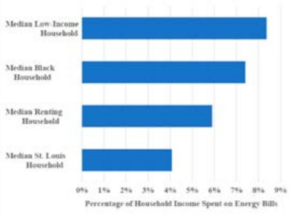

Black households in St. Louis spend a significantly higher percent of their income on energy bills (7.5%) compared to the rest of the St. Louis population (4%). This issue is also present around the country: 50% of black families in the U.S. have difficulty paying energy bills
This is because many people of color have been stuck living in poor quality housing. Oftentimes, this also means that their housing is energy inefficient due to poor insulation, air leaks, and inefficient heating and cooling systems. In addition,few landlords provide better appliances or improve housing quality because they have no financial incentive to do so. Because of energy innefficiency, many black and Latino families have to pay more per square foot.
Several programs, both on national and state levels, have tried to help address the difficulties low-income households have when paying for utility bills, but they still aren't enough to help everyone in need. For example, the Low-Income Home Energy Assistance Program, only has enough funding to help 20-25% of eligable households.
Some households have to decrease budgets for basic necessities as well as heating and cooling.
Here is a graph showing the median income percantages spent on utility bills for low-income, black, and renting households compared to average St. Louis household. All three percentages are higher than the St. Louis percentage, showing the disparity between them.
